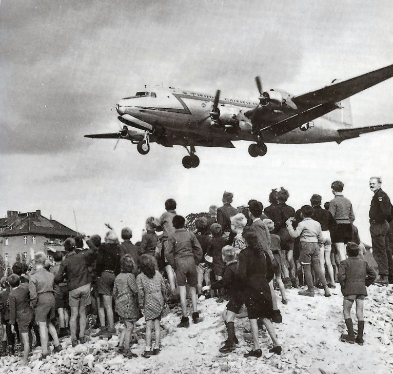

Directions: Work through the five stations in order. Each station holds one document from the years 1946 to 1949: a diplomat's cable, a speech that named the division, a doctrine, an aid proposal, and a record of the strategy under test. Answer the questions at each station. At the end, build the briefing the five documents support and judge which document did the most to fix the policy in place.
Source: George F. Kennan, The Long Telegram, February 22, 1946 (Foreign Relations of the United States, via Wikisource), as carried in the audited TPSP record. Cuts are marked with ellipses.
... At bottom of Kremlin's neurotic view of world affairs is traditional and instinctive Russian sense of insecurity. ... they have learned to seek security only in patient but deadly struggle for total destruction of rival power, never in compacts and compromises with it. ...
... Soviet power, unlike that of Hitlerite Germany, is neither schematic nor adventuristic. It does not work by fixed plans. It does not take unnecessary risks. Impervious to logic of reason, and it is highly sensitive to logic of force. For this reason it can easily withdraw, and usually does, when strong resistance is encountered at any point. ...
According to Kennan, what sits at the bottom of the Kremlin's view of the world, and how have its rulers learned to seek security? Answer from the text.
Kennan says Soviet power is highly sensitive to the logic of force and usually withdraws when strong resistance is encountered. What American policy does that claim make possible? Answer in two sentences.
Source: Winston Churchill, Sinews of Peace address, Westminster College, Fulton, Missouri, March 5, 1946, delivered text as printed by the Churchill Archives Centre. One passage is quoted; the speech's argument around it is summarized below the passage and marked as a summary.
From Stettin in the Baltic to Trieste in the Adriatic an iron curtain has descended across the Continent. Behind that line lie all the capitals of the ancient states of Central and Eastern Europe.
Teaching summary of the rest of the address, prepared for this lesson. Churchill, the former British prime minister, spoke with President Truman seated on the platform. He argued that the Soviet Union sought the fruits of war and the indefinite expansion of its power and doctrines, that it admired strength and despised weakness, and that the English speaking peoples should stand together in strength while there was still time. He said he did not believe the Soviet Union desired war. He believed it desired the expansion the passage at the top of this station describes, behind a line that now ran through the middle of Europe.
Draw the line Churchill names. Which two ports mark its ends, and what lies behind it?
Churchill spoke as a former prime minister, not as a head of government, yet the speech landed as an official warning. What detail in the summary helps explain why?
Source: Harry S. Truman, Truman Doctrine Address, March 12, 1947 (Harry S. Truman Library, Public Papers), as carried in the audited TPSP record. Cuts are marked with ellipses.
I believe that it must be the policy of the United States to support free peoples who are resisting attempted subjugation by armed minorities or by outside pressures. ... I believe that our help should be primarily through economic and financial aid which is essential to economic stability and orderly political processes. ...
Truman spoke to a joint session of Congress to ask for four hundred million dollars in aid to Greece, whose government faced Communist guerrillas, and to Turkey, under Soviet pressure over the straits. Britain had told Washington it could give Greece and Turkey no further aid after March 31. Notice the shape of the passage. It names no country as the enemy, and it is written to cover any case anywhere, not only the two countries named in the request.
State the doctrine in the passage's own terms. Whom will the United States support, against what, and chiefly by what kind of help?
The request before Congress covered two countries. Why did Truman frame the policy as a worldwide rule instead of a request about Greece and Turkey alone?
Source: George C. Marshall, Harvard Address, June 5, 1947 (American Rhetoric transcription, from audio), as carried in the audited TPSP record. Cuts are marked with ellipses.
... this visible destruction was probably less serious than the dislocation of the entire fabric of European economy. ... It is logical that the United States should do whatever it is able to do to assist in the return of normal economic health in the world, without which there can be no political stability and no assured peace. Our policy is directed not against any country or doctrine but against hunger, poverty, desperation, and chaos. ...
Marshall, the secretary of state, spoke at a Harvard commencement, not before Congress. The program Congress funded the next year gave about thirteen billion dollars between 1948 and 1952 to rebuild Western Europe. The Soviet Union refused to take part and barred the states under its control from taking part.
Marshall says the visible destruction was less serious than something else. What was that something, and why would it matter more than ruined factories?
The policy is directed, in Marshall's words, not against any country or doctrine. Name the four enemies he does name, and explain how fighting them served containment.
Source: Teaching summary prepared for this lesson from the public record of the Berlin Blockade and Airlift, 1948 to 1949, with the photograph below from the United States Air Force record held by the Library of Congress. This station is a summary, not a transcription of one document.

Berlin lay deep inside the Soviet occupation zone of Germany, and its western sectors were held by the United States, Britain, and France. In June 1948, after the Western powers moved to join their zones and reform the currency, the Soviet Union closed every road, railway, and canal linking West Berlin to the West. About two million people faced the loss of food and coal delivered by land. The Western powers supplied the city by air instead, around the clock, through the winter. At the effort's peak the planes were landing at intervals measured in minutes. In May 1949 the Soviet Union lifted the blockade, having gained nothing. West Berlin stayed Western, and it stayed an island inside the Soviet zone.
What exactly did the Soviet Union close in June 1948, and what choice was the closure meant to force on the Western powers?
Kennan at Station 1 said Soviet power usually withdraws when strong resistance is encountered. Does the ending of this station support his claim? Answer with the evidence.
Build the briefing from the five stations. For each row, name the station that carries the answer and write the answer the document gives.
| Briefing question | Station | What the document says |
|---|---|---|
| What is the threat said to be? | ||
| What tools does the strategy use? | ||
| Where does the strategy draw its line? | ||
| What does the test at Berlin prove or fail to prove? |
Close the briefing in a short paragraph. Judge which one document did the most to fix containment in place as American policy, and defend your choice against the strongest rival document. Use evidence from at least two stations.
What sits at the bottom of the Kremlin's view, and how do its rulers seek security? A traditional and instinctive Russian sense of insecurity. Its rulers have learned to seek security only in a patient but deadly struggle for the total destruction of rival power, never in compacts and compromises with it. Credit requires both halves, the insecurity and the refusal of compromise.
What policy does the sensitivity to force make possible? It makes containment possible. A power that takes no unnecessary risks and usually withdraws before strong resistance can be blocked at each point it tests, without the blocking side having to attack it or roll it back. Students should connect the claim to the strategy by name.
Draw the line. The line runs from Stettin in the Baltic to Trieste in the Adriatic. Behind it lie all the capitals of the ancient states of Central and Eastern Europe. The sentence gave the division a name and a geography the public could hold, which is why the phrase outlasted the speech.
Why did a former prime minister's speech land as an official warning? President Truman sat on the platform at Fulton while Churchill spoke, in Truman's home state, on a trip the two men made together. Churchill held no office, yet the president's presence told every listener that Washington wanted the warning heard. Students may also note that Churchill spoke for a Britain that could no longer carry the burden alone and was handing the argument to the United States.
State the doctrine in its own terms. The United States will support free peoples who are resisting attempted subjugation by armed minorities or by outside pressures, and its help should be primarily through economic and financial aid, which Truman tied to economic stability and orderly political processes.
Why frame a two country request as a worldwide rule? Because the administration expected the case to recur, and a rule stated once could cover Greece, Turkey, and the next country without a new argument each time. The framing also raised the stakes for Congress: voting the money became a vote on a principle, and refusing it became a refusal of the principle. Strong answers note the cost of the framing as well. A promise written to cover any case anywhere commits the promiser to cases not yet imagined.
What was more serious than the visible destruction? The dislocation of the entire fabric of European economy: the breakdown of the exchanges, currencies, and markets by which food, fuel, and goods normally moved. Bombed factories can be rebuilt while a working economy stands. A dislocated economy cannot feed cities even where factories survive, which is why Marshall treated economic health as the ground of political stability and peace.
Name the four enemies, and the containment link. Hunger, poverty, desperation, and chaos. Kennan's account held that Soviet power and Communist parties fed on exactly these conditions. Aid that removed them removed the openings Moscow used, without a shot and without naming the Soviet Union as the target. The Soviet refusal to take part, and the bar on its satellites taking part, belong in full credit answers as the plan's dividing effect.
What was closed, and what choice was it meant to force? Every road, railway, and canal linking West Berlin to the West. The closure was meant to force the Western powers to choose between abandoning about two million West Berliners to Soviet control and fighting their way through by land, a choice between surrender and war.
Does the ending support Kennan's claim? Yes, on the evidence given. The Western powers met the blockade with firm resistance of a kind Kennan's logic predicted would work: steady, costly, and short of attacking Soviet forces. After eleven months the Soviet Union lifted the blockade having gained nothing. Students may fairly qualify the answer: the airlift also showed the price of resistance, a city supplied by plane through a winter, and the blockade's failure owed something to a supply feat Moscow had not believed possible.
The threat: Soviet expansion driven by ideology and insecurity, pressing outward where it finds weakness, named in geography by Churchill's line from Stettin to Trieste. The tools: firm resistance at each point tested, economic and financial aid to peoples under pressure, and the rebuilding of Western Europe against hunger, poverty, desperation, and chaos. The line: wherever Soviet power has not yet reached, stated as a universal rule in the Truman Doctrine rather than as a border on a map. The test: Berlin, where the blockade failed against an airlift and the blockade was lifted in May 1949, supporting Kennan's claim about resistance while showing its cost. Closing paragraphs earn full credit when the document chosen is defended against a named rival. The strongest cases are usually made for the Truman Doctrine, because it stated the rule in public and bound the government that stated it, and for the Long Telegram, because every later document runs on its analysis. A case for the Marshall Plan can earn full credit if argued from scale: thirteen billion dollars fixed the policy in budgets and in European recovery in a way words alone could not.